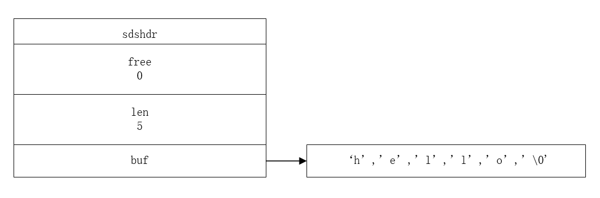
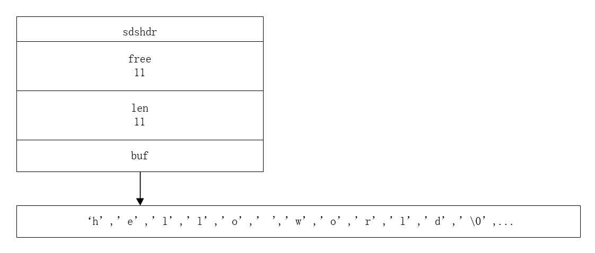

小喵的唠叨话：最近京东图书大减价，小喵手痒了就买了本《Redis设计与实现》[1]来看看。这里权当小喵看书的笔记啦。这一系列的模式，主要是先介绍Redis的实现原理（可能很大一部分会直接照搬原作者的描述），加上小喵自己的想法，之后配合Redis官网上的各种相关的操作命令（原书上貌似没有很多的介绍命令）。
本章介绍Redis中最常用到的字符串(String)。
Redis的字符串(String)的实现
小喵之前有看到过《Redis设计与实现》的一部分章节。这是第一章的内容，小喵也是因为看了这一章的内容，才决定要买本仔细研究的。
首先，我们知道Redis是由C语言编写的，以高效和轻量著称。而C语言中的字符串是怎么实现的呢？字符数组。 比如一个简单的字符串"hello world"，其实是一个如下的字符的数组：['h', 'e', 'l', 'l', 'o', ' ', 'w', 'o', 'r', 'l', 'd', '\0']，最后的一个'\0'是空字符，表示字符串的结尾。
Redis由于各种原因，并没有直接使用了C语言的字符串结构，而是对其做了一些封装，得到了自己的简单动态字符串(simple dynamic string, SDS)的抽象类型。Redis中，默认以SDS作为自己的字符串表示。只有在一些字符串不可能出现变化的地方使用C字符串。
SDS的定义如下：
struct sdshdr {
// 用于记录buf数组中使用的字节的数目
// 和SDS存储的字符串的长度相等
int len;
// 用于记录buf数组中没有使用的字节的数目
int free;
// 字节数组，用于储存字符串
char buf\[\];
};可以看出来，SDS的结构并不复杂:
- buf是一块可用的内存空间，通常大小会大于等于需要存储的字符串的大小（大于？为什么要大于呢？读者可以思考一下）。
- len表示字符串的长度，也表示buf中已经被使用的空间的大小。
- free表示buf中没有被使用的空间的大小。
- 要注意的是，buf的大小等于len+free+1，其中多余的1个字节是用来存储'\0'的。
那么这么封装到底有什么好处呢？我们一点一点剖析。
1，常数复杂度获取字符串长度
在C语言中的字符串只是简单的字符的数组，当使用strlen获取字符串长度的时候，C语言内部其实是直接顺序遍历数组的内容，找到对应的'\0'对应的字符，从而计算出字符串的长度。显然这个算法复杂度和字符串的长度成正比，即O(N)。而对于SDS来说，只需要访问SDS的len属性就能得到字符串的长度，复杂度为O(1)。这样，获取字符串长度的操作就不会成为Redis的瓶颈（当然len的作用不止这么简单，后面还会介绍别的）。
2，杜绝缓冲区溢出
我们知道C++里面的字符串使用了STL的string类型，我们开发者不太需要关注内存的分配和释放的过程。但是Redis是C语言编写的，并没有这么方便的数据类型。对于字符串的拼接、复制等操作，C语言开发者必须确保目标字符串的空间足够大，不然就会出现溢出的情况。
char a[10] = "hello";
strcat(a, " world");
strcpy(a, "hello world");上面的三句代码，就是C语言的字符串拼接和复制的使用，但是明显出现了缓冲区溢出的问题。字符数组a的长度是10，而"hello world"字符串的长度为11，则需要12个字节的空间来存储（不要忘记了'\0'）。
然后，我们看看Redis的SDS是怎么处理字符串修改的这种情况。
当使用SDS的API对字符串进行修改的时候，API内部第一步会检测字符串的大小是否满足。如果空间已经满足要求，那么就像C语言一样操作即可。如果不满足，则拓展buf的空间，使得满足操作的需求，之后再进行操作。每次操作之后，len和free的值会做相应的修改。
这就是SDS的全部的高明之处了吗？当然不！
当API发现SDS的buf的容量不够的时候，并不是简单申请正好适合的大小，而是额外申请了一倍的空间！我们以sds的API sdscat 函数为例，该函数实现了sds的拼接的功能。
下面的例子是"hello" 和" world"的拼接的过程。


这里的buf的容量是23（free + len + 1）。为什么要这么做呢？耐心向下看吧。
3，减少修改字符串时带来的内存重分配次数
我们之前说到，对于一个N长的字符串，C语言中底层是一个N+1长的字符数组（有一个字节存放空字符）。C字符串的长度和底层数组之间的长度存在着这样的关系，因此当进行字符串的操作而导致字符串长度发生变化的时候，需要对内存进行重新分配。
- 如果操作会增长字符串，那么在执行之前，就需要进行内存分配扩充底层数组的大小。
- 如果是缩短字符串的操作，则需要释放额外的内存
注：这是书中的意思，但小喵觉得如果字符串缩小的话，其实并不用立刻释放内存，如果字符串是malloc出来的话，需要释放的直接free就可以，也不需要给定空间的大小，所以不会出现内存泄露。当然，也可能Redis里面是用别的方式实现，这样小喵就不懂了）。
对于一般的程序而言，如果修改字符串的操作并不是特别常出现，那么每次修改都重新分配一下内存也是可以接受的。但是Redis作为一个数据库，其读写速度，数据修改频率都被要求达到很高的效率。因此这种低效的方式并不适合Redis。
为了避免C字符串的这些弊端，SDS通过未使用空间解除了字符串长度和底层数组长度之间的关系。也就是之前说的buf的长度为len和free之和（再加1）。数字里面可以包含未使用的空间，大小用free表示。
Redis主要通过以下两种策略来处理内存问题：
i) 空间预分配
这种方式用于处理字符串长度增加的问题。如果对字符串的修改使得字符串的长度增加，API首先会判断buf的空间大小是否满足，如果满足则直接操作，如果不满足，则进行如下操作：
如果对SDS进行修改之后的，SDS的长度（即len的值）小于1MB。程序将额外分配和len一样大小的未使用空间。以上面的"hello" + " world"的操作为例。在这个例子中"hello"的len是5（不考虑'\0')，修改之后的字符串"hello world"长度为11，那么新的SDS的buf的容量就是11*2+1。其中len和free都是11，多余的1字节用来存储'\0'。
如果对SDS修改之后的长度大于1MB，那么程序会分配1MB的未使用空间。比如原数据是5MB，修改之后需要6MB的空间，进行修改的操作后，buf的实际空间应该是7MB，其中len为6MB，free为1MB。
那么这些未使用空间能够做什么呢？为什么根据SDS的修改会的大小会有两种不同的分配原则呢？
小喵是这么认为的，如果数据被更改，则说明这个数据很可能会被再次更改，如果能够提前分配多余的空间，那么下一次变化的时候很可能就不需要再次分配空间了。如果数据比较小（<1MB）的时候，可以分配等大的未使用空间。但是如果数据已经很大的时候（>1MB），再分配同等大小的内存会显得十分浪费，毕竟不能确保这个字符串一定会被再次修改，所以只额外分配1MB的空间。
通过这种策略，SDS可以做到N次修改，最多进行N次内存分配。而C字符串在N次修改则一定要进行N次内存分配。一个是至多N次，一个是一定N次。用小喵的脑袋想，也觉得SDS这个策略简单、粗暴、高效。
ii) 惰性空间释放
当执行字符串长度缩短的操作的时候，SDS并不直接重新分配多出来的字节，而是修改len和free的值（len相应减小，free相应增大，buf的空间大小不变化）。通过惰性空间释放，可以很好的避免缩短字符串需要的内存重分配的情况。而且多余的空间也可以为将来可能有的字符串增长的操作做优化。
当然，SDS也提供直接释放未使用空间的API，在需要的时候，也能真正的释放掉多余的空间。
4，二进制安全
C字符串中的字符必须符合某种编码（比如ASCII），并且字符串除了末尾之外不能出现空字符，否则会被程序认为是字符串的结尾。这就使得C字符串只能存储文本数据，而不能保存图像，音频等二进制数据。（这里，小喵的观点是不同的，小喵本人是做图像的，opencv等的库，都是使用unsigned char*来存储图像的数据。我们完全可以把字符数组看成一堆内存，存放任何数据都可以）
使用SDS就不需要依赖控制符，而是用len来指定存储数据的大小。同时所有的SDS操作的API都是二进制安全的（binary-safe），所有的SDS API都会以处理二进制的方式来处理SDS的buf的数据。程序不会对buf的数据做任何限制、过滤或假设，数据写入的时候是什么，读取的时候依然不变。
这也是我们将SDS的buf属性程序字节数组的原因，Redis不是使用这个数组来保存字符，而是储存一系列二进制数据。
5，兼容部分C字符串函数
由于SDS的buf的定义和C字符串完全相同，因此很多的C字符串的操作都是适用于SDS->buf的。比如当buf里面存的是文本字符串的时候，printf函数，也完全可以试用。这样，Redis就不需要为所有的字符串的处理编写自己的函数，大多数通过调用C语言的函数就可以。
总结
| C字符串 | SDS |
|---|---|
| 获取字符串长度的复杂度为O(N) | 获取字符串长度的复杂度为O(1) |
| API是不安全的，可能会造成缓冲区溢出 | API是安全的，不会造成缓冲区溢出 |
| 修改字符串长度N次必然需要执行N次内存重分配 | 修改字符串长度N次最多需要执行N次内存重分配 |
| 只能保存文本数据 | 可以保存文本或者二进制数据 |
| 可以使用所有库中的函数 | 可以使用一部分库的函数 |
以上则是Redis的string结构的原理部分。下一章我们会介绍一些string操作的redis命令。
转载请注明出处。
参考： [1] http://redisbook.com/